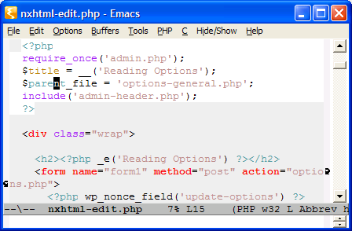
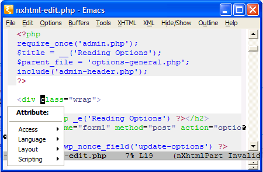
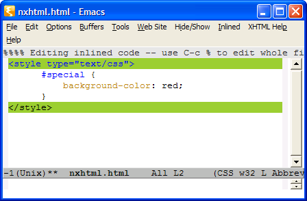

nXhtml - The old Way Multiple Modes
This file describes the old way to work with multiple major modes in nXhtml. You can still use this if you want to. To do that move mumamo out of Emacs load-path before starting Emacs.
To read about the current way please see nXhtml - an Emacs Mode for XHTML.
And What About PHP? (The old way)
I glad to say that I just got this working in a way I like it. Though I would like some feedback. Here is how it works now:
When point is in a PHP part then the major mode is switched to php-mode, with all that means. Here you can see how that looks:
If you move the point outside of those <?php ... ?> areas then the mode is automatically switched to nxhtml-part-mode instead. Now you can use the power of nxhtml-part-mode and do for example completion, like here:
The switching is done with a short delay so that it does not interfere with your normal editing. That's it. (But maybe there should be a better php-mode? Does someone has any better than the one that comes with nXhtml now?)
To be honest this might not work in all cases. What happens behind the scenes is that nXhtml here adds invisible top and bottom which has code that satisfies the XHTML DTD. By doing that nXhtml can do completion and XHTML syntax checking. However that does of course not work if it does not fit your PHP code.
But ... - it can still work. Because you can customize what the invisible header and footer should contain.
Note: Bugs in Emacs 22 beta affects mode switching.
More About Multiple Modes (The old way)
In the case above, with PHP and XHTML, the two modes can both handle all of the files. (At least if you just use <? ... ?> in the way specified by XHTML.) If you have embedded JavaScript or CSS the situation is different. In this case the whole file can still be valid XHTML, but it surely can not be valid JavaScript or CSS. Emacs modes wants to take care of the whole file so it is hard for a JavaScript or CSS Emacs mode to handle embedded code.
In nXhtml the solution to this problem is to just take care of the relevant part of the file when editing embedded code of this kind. There is no automatic switching in this case however. You have to do it yourself, but it is easy. First you position point inside the embedded area, like here:

To switch to edit just the embedded part you can type C-c %:
To get back to see the whole file again type C-c % again.